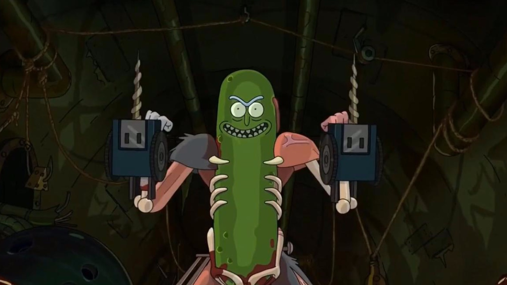
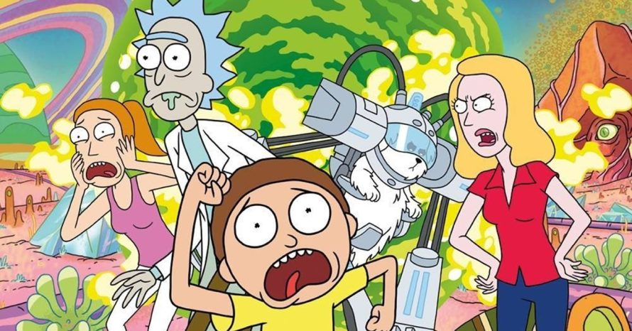
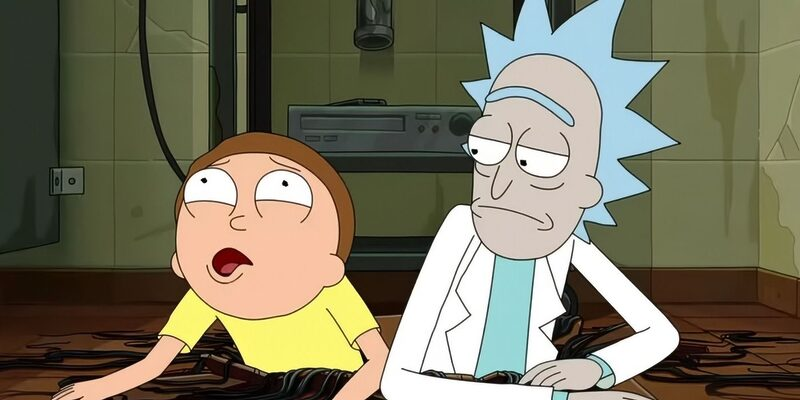
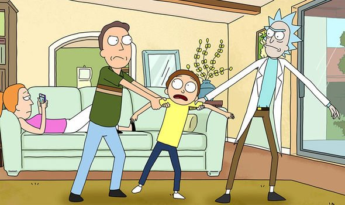

No episódio "Pickle Rick" de Rick and Morty, Rick se transforma em um picles para evitar a terapia familiar com sua filha, Beth. Enquanto ela e a família vão à terapia, Rick enfrenta uma série de desafios, incluindo lutar contra ratos e agentes criminosos, usando sua inteligência para sobreviver. O episódio mistura comédia e ação, enquanto explora a fuga de Rick dos problemas emocionais e familiares.


